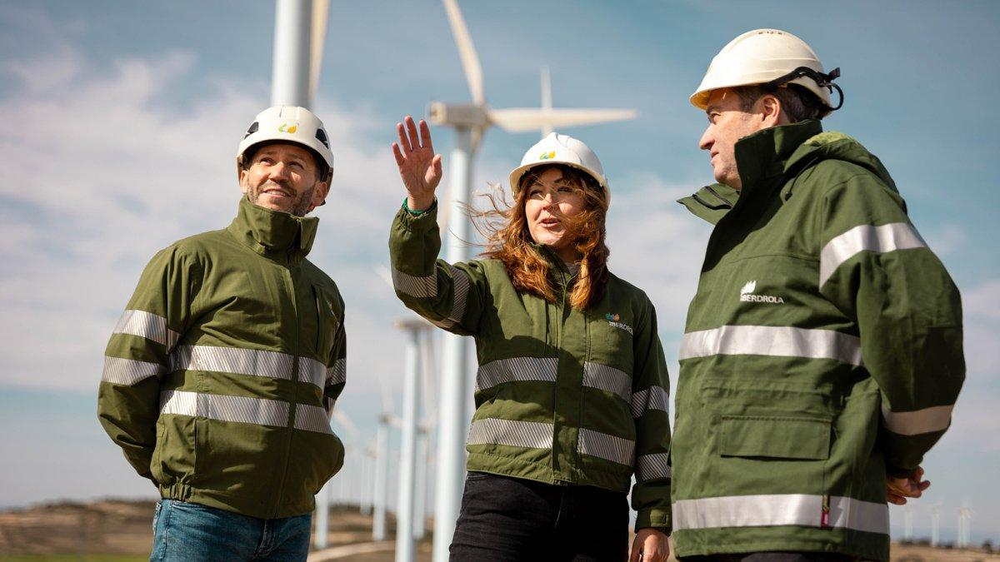
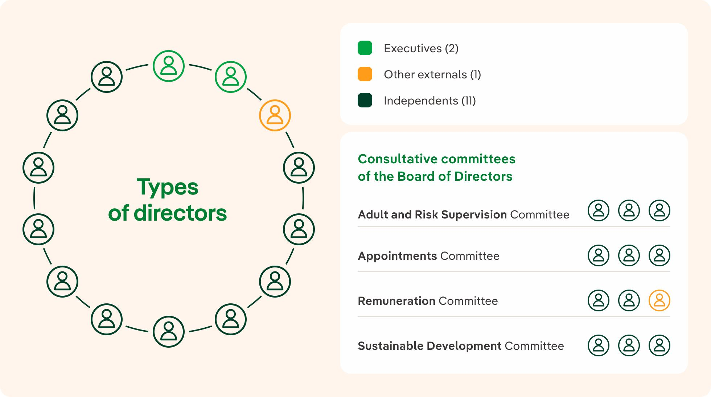

Análisis de los criterios ASG
Ambientales (A)


- Energías renovables: Invierte en parques eólicos, solares e instalaciones hidroeléctricas para producir electricidad con menos emisiones.
- Reducción de emisiones: Busca reducir su huella de carbono y aumentar la producción de electricidad procedente de fuentes limpias. En 2025, el 85 % de su capacidad instalada estaba libre de emisiones.
- Protección del medio ambiente: Desarrolla iniciativas para proteger la biodiversidad y reducir el impacto de sus instalaciones sobre los ecosistemas naturales.
Social (S)

- Empleo de calidad: Promueve contratos estables, condiciones laborales adecuadas y formación para sus trabajadores.
- Igualdad e inclusión: Trabaja para garantizar la igualdad de oportunidades, evitar la discriminación y favorecer la diversidad dentro de la empresa.
- Compromiso con la sociedad: Apoya proyectos sociales, educativos y de cooperación para mejorar la calidad de vida de las comunidades donde trabaja.
Gobernanza (G)

- Transparencia: Publica informes económicos y de sostenibilidad para que los accionistas y la sociedad puedan conocer sus resultados y actuaciones.
- Ética empresarial: Dispone de un código ético y medidas para prevenir la corrupción, los conflictos de intereses y las malas prácticas.
- Control y supervisión: Cuenta con órganos de administración, auditoría y cumplimiento que supervisan las decisiones de la empresa y el cumplimiento de las normas.
Clasificación de sostenibilidad
| Índice | Clasificacion |
|---|---|
| MSCI ESG Ratings | AAA |
| FTSE4Good | Incluida desde 2009 |
| CDP Climate Change 2025 | A |
| ISS ESG | Prime |
| Dow Jones Best-in-Class | Incluida en World y Europe |
| Sustainability Yearbook 2026 | Entre el 10 % más valorado |
| ¿De dónde hemos sacado estos datos? | |
Estrategia de ISR
La estrategia que elegiría para Iberdrola sería el filtro positivo
Esta estrategia consiste en ayudar a las empresas que destacan por sus buenas prácticas ambientales, sociales y de gobernanza.
¿Por qué elegiría esta estrategia?
- Iberdrola apuesta por las energías renovables y la reducción de emisiones.
- Promueve la igualdad de oportunidades y el empleo de calidad.
- Cuenta con medidas de transparencia, control y ética empresarial.
¿Invertiría en Iberdrola?
Sí, invertiría en Iberdrola porque es una empresa que apuesta por las energías renovables, además intenta reducir la contaminación y mantiene un compromiso con sus trabajadores y la sociedad. También, cuenta con buenas calificaciones en diferentes índices internacionales de sostenibilidad. Aunque todavía tiene aspectos que mejorar y su actividad puede generar impactos ambientales, creo que es una buena opción para realizar una inversión socialmente responsable a largo plazo.